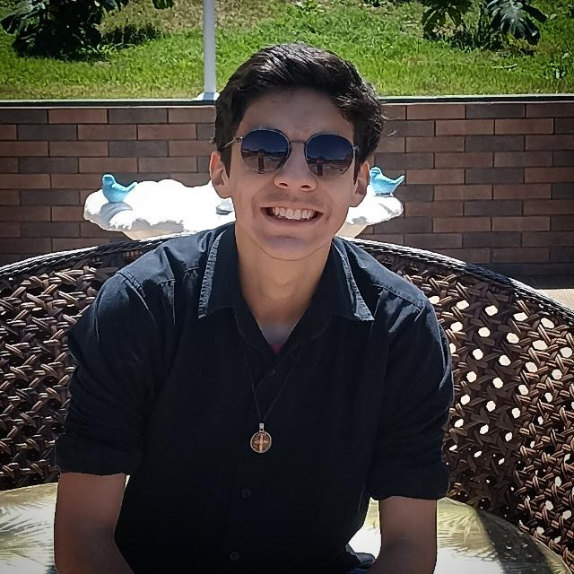

Meu nome é Luiz Felipe, seja muito bem-vindo ao meu site!
Tenho 19 anos, natural de Curitiba, estou cursando o curso de tecnólogo em Análise e Desenvolvimento de Sistemas pela Uninter, venha me conhecer melhor neste portfólio!
Gosto de ler, jogar videogame, escutar música e utilizar minhas redes sociais em minhas horas vagas.
Quer saber mais? Fique a vontade para navegar pelo meu site!